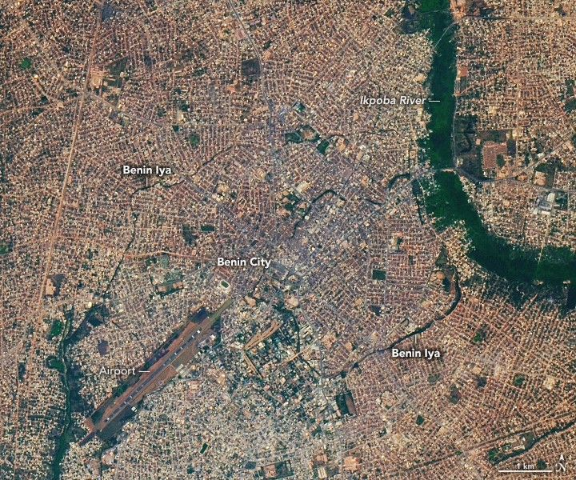

A Glimpse of History in Benin City
In some ways, Benin City is like dozens of other fast-growing cities in Nigeria. Buoyed by burgeoning industrial and agricultural sectors, the city’s population rose by 1.7 million over the past four decades as its footprint on the West African landscape expanded several times over.
Amid bustling new networks of roads, residential neighborhoods, markets, and workshops lie signs of a much earlier era, when the city was the seat of a powerful pre-colonial kingdom. Remnants of ancient earthworks, thought to be among the longest in the world, are even visible in images of the city captured from space.
Benin Iya (also called the Benin Earthworks, the Walls of Benin, or the Benin Moat) is a vast, cellular network of interlocking earthen walls, ramparts, and ditches that radiate outward from a central moat at the heart of the city. Built over hundreds of years between the 7th and 14th centuries, the system marked defensive, political, and economic boundaries and played a key role in maintaining order and stability in the Kingdom of Benin.
The OLI-2 (Operational Land Imager-2) on Landsat 9 captured an image of the earthworks on January 11, 2025. The features appear as dark green lines tracing arcing patterns in densely settled areas near the airport on the west bank of the Ikpoba River. Trees and vegetation growing in the moats give the features their dark green color.
Most of the earthworks consisted of relatively narrow and shallow linear ramparts and ditches that spread widely across the landscape. Many sections have been destroyed, obscured by modern development, or are too small to be easily detected by satellites or astronauts in orbit. However, some inner sections that run through the modern Oredo, Egor, and Ikpoba-Okha areas of the city had true walls and moats, making them among the most visible features in Landsat imagery.
Archaeological research indicates the earthworks spanned more than 16,000 kilometers (10,000 miles) and enclosed roughly 6,500 square kilometers (2,500 square miles)—an area roughly the size of Delaware. This length earns the system a Guinness World Record as the “longest earthworks of the pre-mechanical era.” By some measures, the network was even longer than the Great Wall of China.